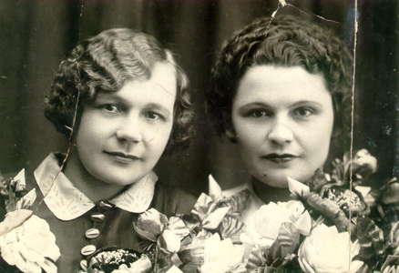
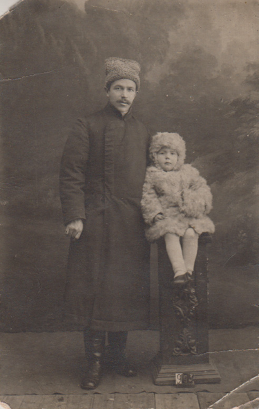
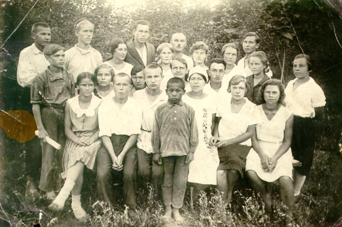
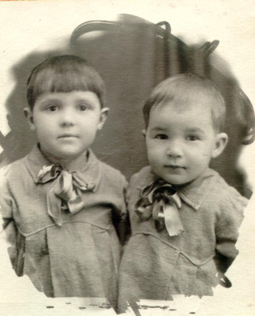
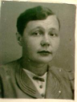
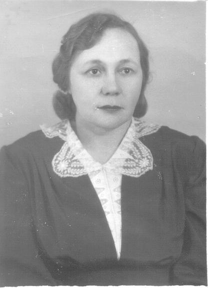
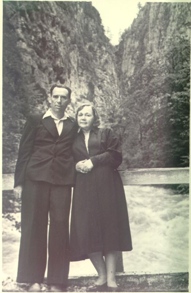
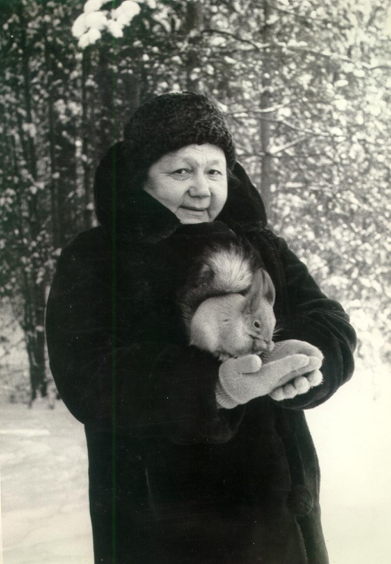

«Я смотрю на фотокарточку…»

Очень люблю эту фотографию. Здесь моя мама Мельникова Надежда Федоровна (слева) со своей подругой. Это было в очень счастливое время – до войны…
А еще она была счастлива первые три года своей жизни, пока в 1917 году не умерла ее мама – урожденная Зеленина Антонина Павловна. И еще, пожалуй, семь лет, пока папа (Мельников Федор Петрович) не умер… Он очень любил и очень баловал свою Надюшку.

А потом началась сиротская жизнь. Родственников было немало и с той, и с другой стороны. И не бедствовали. И бездетные были. А в семью не брали – только погостить. Девочка была худенькая, отец умер от туберкулеза – опасно! Так и мыкалась от одной родни к другой.
Только в своем преклонном возрасте мама рассказала о том, как ей жилось. Я на всю жизнь запомнила слова, сказанные теткой присевшей отдохнуть девочке: «Наденька, тебе нечего делать?» И девочка поднимается и продолжает прерванную работу. В этом доме было бесчисленное множество всяких мелких предметов, и каждую вещь надо было тщательно протереть, ничего не разбив, и поставить на место. Это было не трудно, но утомительно, долго и под пристальным взглядом хозяйки.
Ее часто наказывали. Однажды тетка стала бить ее мокрой половой тряпкой. Спасаясь бегством, девочка бросилась под кровать и ударилась головой о железную ножку, что была посередине. Один глаз заплыл, а лицо превратилось в сплошной синяк. Тетка испугалась, притащила кусок свежего мяса и положила на лицо… На улицу не выходила долго, а в школу сообщили, что Надя больна.
Потом девочку перевезли в Ташкент, к родственникам мамы. Там тоже – сначала у одних, потом у других под Ташкентом (5 и 6 классы), наконец, она оказалась у тети Веры в Пахтарале, где и закончила I ступень Первой советской школы (в первом ряду вторая справа).

Мама училась хорошо, была председателем учкома, и ей дали направление на рабфак, а райком комсомола – направление в деревню на ликвидацию безграмотности. Дядя Саша, муж тети Веры, стукнул по столу кулаком и потребовал отправляться туда, куда направляет партия. И мама поехала учительствовать в деревню.
Так в 17 лет началась ее самостоятельная жизнь.
«А завтра была война…»
Нет, до войны было еще несколько лет: возвращение в Пахтарал, работа в банке, встреча с моим папой Басс Анатолием Михайловичем, замужество и рождение трех дочерей: Инна, Эмма, Алла…


Сколько всего стоит за этими тремя строчками! И веселого, и грустного… А впереди – самое страшное: война… Это голод, холод, смерть старшей дочери, тиф… Долго была в беспамятстве. Дочь хоронили без нее, младших разобрали в семьи. Папе на фронт сообщили о том, что Надежды (или надежды?) нет…

Выжила. И снова работа, работа, работа… Всю жизнь проработала бухгалтером. Ее годовые отчеты всегда ставили в пример другим, ее ценили, предлагали стать главным бухгалтером, но она неизменно отказывалась. Она рассказывала мне, какую хорошую школу прошла в начале пути, и объясняла, почему не соглашалась на повышение: придется подписывать бумаги, которые не соответствуют истине. И в партию отказалась вступать… Мне сказала: все равно бы выгнали – правду не любят…
После окончания войны папу долго не отпускали. Предложили службу в Польше, вызвать семью – мама отказалась. Его перевели в Москву – мама отказалась ехать. И папа вернулся к нам в Казахстан…
«А путь и далек, и долог…»
После возвращения папы мама познала все прелести жены геолога: переезды, маленькие поселки, служебные квартиры… Хотела написать «неустроенный быт» и улыбнулась: вот этого никогда не было!
Хозяйкой мама была превосходной. В каких бы условиях мы ни жили, у нас всегда было очень чисто, уютно, красиво. И сытно (за свою жизнь мама трижды пережила голод). Она умела делать все: мазать глиняные и скоблить деревянные полы, ухаживать за скотиной, доить корову и взбивать масло, истопить любую печь любым видом топлива, включая нефть и уголь, прекрасно чертила, красиво писала и была очень женственной.

Мама никогда не повышала голос, никогда не читала нотаций, я даже не могу представить маму ругающей нас, троих детей (после войны родился брат Володя), а между тем она была строгой и требовательной. Как-то уживалось в ней вроде бы несовместимое. Скромная, всегда старающаяся быть в тени, она пользовалась таким авторитетом, какому могли бы позавидовать самые яркие, компанейские люди.

Любимым занятием мамы было рукоделие. Еще до войны, в Актюбинске, знакомые искали нашу квартиру, зная только улицу – Кладбищенская. И нашли по шторам: «Такую вышивку может сделать только Надя!» А вышивку, копирующую рисунок на пианино и сделанную в 1950 году, я до сих пор храню – помню, как она над ним колдовала.
Кстати, о пианино. Когда папа получил премию за открытие месторождения, он спросил маму, что покупать – машину или пианино. Мама ни секунды не колебалась…
А как она шила! Нас мама обшивала с детства и до студенческих лет. Это обходилось дешевле и качественнее, а уж о красоте и говорить не приходится – любой фасон из журнала был ей подвластен.
Вязанием увлеклась позднее – когда папы не стало. Помню, надо было мне четырехлетнюю дочурку собрать в московский санаторий аж на 3 месяца. Это по тем временам была нешуточная проблема. И вдруг от мамы приходит посылка с полным «обмундированием»: и кофточки с юбочками, и платьица, и брючки-клеш, и пальто на подкладочке. И все – вязаное на спицах шерстяными и хлопчатобумажными нитками. Все – красивое, яркое, по последней моде!
Готовила она так, что друзья предпочитали по любому поводу у нас собираться, хотя договаривались, что по праздникам – по очереди. Папа терпел это несколько лет, а потом стал увозить маму на праздники в город – в хорошую гостиницу, в ресторан, в театр.
К слову о театре. Однажды в Москве папа купил маме вечернее платье и туфли-лодочки специально для посещения Большого театра. Он очень любил ее…

Единственное, что вызывало упреки папы, это то, что мама очень мало читает… Да, это было так. Читать мама стала, когда вышла на пенсию, и очень много. Сначала перечитала классику (папа собрал прекрасную библиотеку), потом ее сильным увлечением стала историческая литература.
Овдовела мама в 56 лет и прожила в одиночестве 36 лет… Конечно, были дети и внуки, были друзья и знакомые, но все равно это одиночество…

Гостеприимная и хлебосольная, она никого не отпускала не накормив как следует. У нее была маленькая пенсия, но она умела из ничего приготовить вкусно и красиво. Мои подруги рассказывали мне, что нередко приезжали к ней, чтобы просто поговорить, и непременно обогащались какими-нибудь рецептами или хозяйственными хитростями.

Это был очень стойкий и мужественный человек. Когда перестал видеть тот глаз, что был травмирован в детстве, она в 90-летнем возрасте пошла на операцию – сохранить зрение на втором, чтобы можно было читать и вязать. Она не умела жить без дела. Даже будучи тяжело больной, она до последнего дня своей жизни делала все, что могла, а под вечер уснула и не проснулась – болезнь победила…
Алла Басс (Дворжицкая, Ларина).